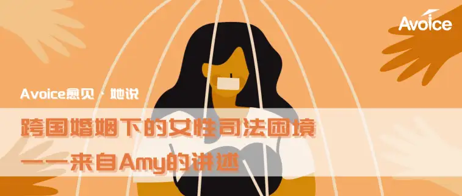
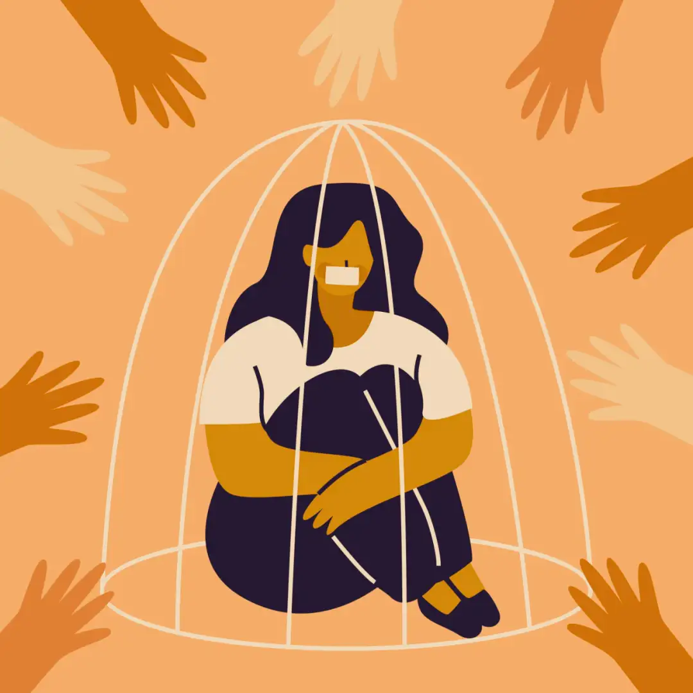
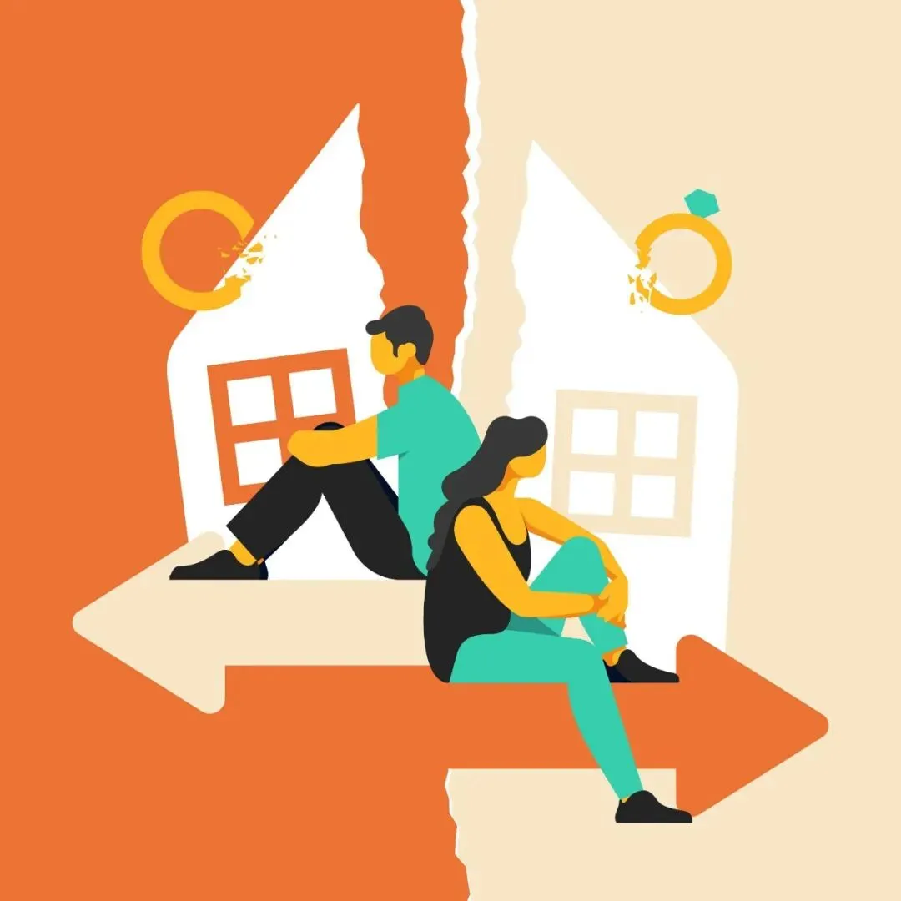
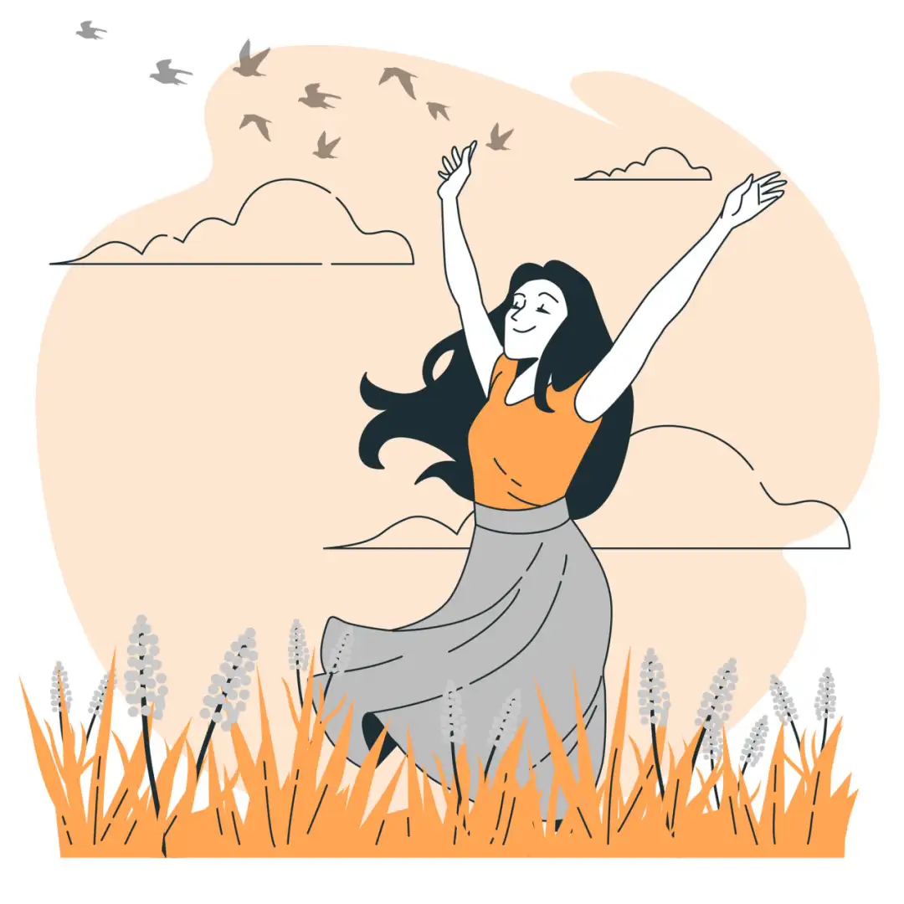

Amy曾怀揣着对爱情与未来的憧憬远赴法国留学。在法国，她遇到了现任丈夫，两人迅速相识、相恋并结婚。婚后不久，Amy便怀孕了，于2023年4月生产，然而，这段婚姻很快演变成了困住她的牢笼。
产后不久，Amy的丈夫突然将她遗弃，并试图剥夺她对孩子的抚养权。孤身在异国他乡，她面临着丈夫对她的诬告、对法国法律体系的不了解，以及孩子身份文件被掌控等重重困境。丈夫不仅在法国申请了禁令，限制她与他联系，更通过法律手段将Amy驱逐出住所，让她在身心俱疲的状态下无处可去。Amy说：“我觉得最不公平的一点是，我很早就报过警，但警方没有任何处理。结果他一反咬，我就立马被抓了。”
这场跨国婚姻的破裂，让Amy不得不在中法两国间来回奔波，面对复杂的法律程序与心理创伤。
1
司法滥用与性别偏见：被反咬一口的受害者
在遭受丈夫遗弃后，Amy试图通过法律维护自己的权益，但她很快发现，法国的司法系统并没有站在她这一边。她多次向警方报警，控诉丈夫对她的精神与身体伤害，却未得到有效回应。然而，丈夫的一次诬告却让Amy被迅速拘留。
“警方因为他的一面之词，就把你带去了拘留所？连证据都没有？”面对采访，Amy回忆道：“我这些我不知道，因为当时我跟他是分开的。”Amy解释道，那次是她主动报警，丈夫却反咬她是施暴者，警方在没有核实事实的情况下将她带走。
在法国法律体系下，丈夫轻易地操控了程序走向，向法院申请了针对Amy的单向禁令，禁止她与丈夫联系，但丈夫却可以随时对她发起法律行动。Amy无奈地说：“法律都在助长他遗弃我。”这场法律斗争中，Amy完全处于被动地位。
法国法院审知对Amy发出强制出庭的要求。若她无法按时到庭，将面临最高三年的刑期。Amy表示：“如果我不出庭，他们是可以直接判我三年有期徒刑的。这是明文规定的。”而此时的她，因经济困难和身体原因，甚至难以负担赴法出庭的费用。

2
跨国法律困境：身份依附与抚养权争夺
Amy的法国居留权完全依附于丈夫，婚姻破裂后，她的合法身份也陷入危机。丈夫单方面与房东解约，导致Amy在生病期间被强行驱逐。尽管她依法拒绝解约，法国法律对面临冬季驱逐的租客的保护也未能保护她。Amy感慨道：“我是在一个病中无家可归的状态下被赶出去的。”
Amy的孩子一直滞留在国内，所有重要的行政文件和证件都掌握在丈夫及其家庭手中。这让Amy难以为孩子争取应有的权益。她说：“孩子现在虽然在我身边，但他的所有行政文件都在男方手上，这也是孩子滞留在国内的原因。”
面对未来的抚养权争夺，Amy充满焦虑。根据中国法律，两岁以下孩子的抚养权原则上归母亲所有，但漫长的离婚诉讼程序让这一法律保护变得脆弱。“我担心在真的判决下来的那一天，孩子已经过了两岁。”
3
精神与法律的双重压迫：无处申冤的母亲
据采访，丈夫及其家族对Amy实施了长期的精神控制和冷暴力，甚至在怀孕和产后对她进行性侵。Amy因长期的精神与身体折磨，被确诊为PTSD（创伤后应激障碍）。她说：“我已经长期受我丈夫和我婆家人的霸凌，已经被折磨出PTSD了。”尽管如此，Amy的精神和身体状况在司法程序中未被充分考虑。
她曾多次尝试寻求法律援助，但因法国法律规定，离婚诉讼必须聘请律师，Amy经济困难，难以承担高昂的律师费用。“我需要的不只是咨询律师，而是能真正帮我打官司的律师。”Amy解释道。
更令她绝望的是，法国的妇女保护组织资源紧张，她至今未能获得实质性帮助。而国内的离婚诉讼也因程序复杂进展缓慢，孩子的抚养权、丈夫的违法行为迟迟无法得到法律制裁。

4
坚守与反击：她的声音值得被听见
尽管深陷困境，Amy没有放弃。她希望通过法律维权，更希望通过舆论引起社会关注，揭露丈夫及其家族对她的压迫。“我最想做的事情就是在舆论上造势，”Amy坚定地说，“我想知道这个世道真的可以容许他们这样嚣张下去吗？”
她手中掌握着丈夫对她施暴和精神虐待的录音、照片等证据，但她家人担心激化矛盾，不希望她立刻提起刑事诉讼。Amy也在寻求适当的方式曝光真相，以争取更多的法律和社会支持。
面对未来的不确定性，Amy仍在坚持。她说：“我的生活目标就是报仇雪恨，就是这个信念支撑着我。”

在法国遇到相似困难时您可以：
申请法国的免费法律援助（aide juridictionnelle）。咨询当地的法律援助中心或社区服务机构；
尽可能收集证据（如照片、录音、医院诊断、证人证词等）。即使被诬陷为施暴者，也要向警方解释情况并提交证据；
法国有许多专门为家暴受害者提供庇护的机构（如 Fédération Nationale Solidarité Femmes），可以提供临时住所和支持；
联系法国的儿童保护机构（如 ASE - Aide Sociale à l’Enfance）以保护孩子的权益。这些机构可以介入调查孩子的安全和监护权问题；如果文件被男方扣押，可以通过律师或法院申请强制归还或补办；
法国法律允许家庭暴力受害者申请独立的居留身份（titre de séjour），即使之前依赖配偶签证。可以向所在地区的外国人事务办公室（préfecture）咨询申请流程；
可以联系当地的华人组织或女性权益组织（如 La Maison des Femmes 或 SOS Femmes）。它们可能提供翻译、法律援助或心理支持。
采访｜Lucy、高清瑶
撰稿｜范珊玛
校改｜欧阳印涵
排版/封面｜王佳怡
图片来源｜Freepik